무기 30종
무기 부위 장비 전체입니다. 등급 오름차순으로 정렬했습니다.
요약 표
| 이름 | 등급 | 분류 | 직업 | 공격 | 물리 공격력 | 마법 공격력 | 크리티컬(%) | 크리티컬 공격력(%) | 공격속도 | 제작 확률 | 제작 시간 | 제작 골드 | |
|---|---|---|---|---|---|---|---|---|---|---|---|---|---|
| 나무 검 | C | 무기 | 공용 | 물리 | 300 | 0 | 0.5 | 5 | 0.5 | 100 | 0.17 | 500,000 | |
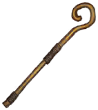 | 나무 지팡이 | C | 무기 | 공용 | 마법 | 0 | 250 | 0.5 | 5 | 0.5 | 100 | 0.17 | 500,000 |
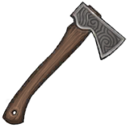 | 나무 도끼 | C | 무기 | 공용 | 물리 | 270 | 0 | 0.5 | 10 | 0 | 100 | 0.17 | 500,000 |
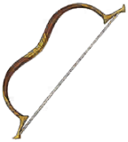 | 나무 활 | C | 무기 | 공용 | 물리 | 200 | 0 | 1 | 5 | 1 | 100 | 0.17 | 500,000 |
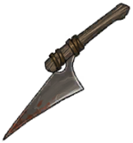 | 나무 단검 | C | 무기 | 공용 | 물리 | 240 | 0 | 0.5 | 5 | 5 | 100 | 0.17 | 500,000 |
| 해골 지팡이 | R | 무기 | 공용 | 마법 | 0 | 700 | 10 | 20 | 0 | 100 | 0.5 | 1,500,000 | |
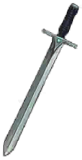 | 강철 검 | R | 무기 | 공용 | 물리 | 600 | 0 | 5 | 10 | 10 | 100 | 0.5 | 1,500,000 |
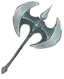 | 강철 도끼 | R | 무기 | 공용 | 물리 | 580 | 0 | 10 | 10 | 0 | 100 | 0.5 | 1,500,000 |
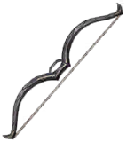 | 강철 활 | R | 무기 | 공용 | 물리 | 470 | 0 | 5 | 20 | 10 | 100 | 0.5 | 1,500,000 |
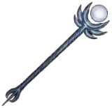 | 강철 지팡이 | R | 무기 | 공용 | 마법 | 0 | 600 | 10 | 25 | 2 | 100 | 0.5 | 1,500,000 |
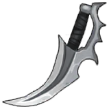 | 강철 단검 | R | 무기 | 공용 | 물리 | 540 | 0 | 10 | 25 | 15 | 100 | 0.5 | 1,500,000 |
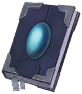 | 신속의 고서 | R | 무기 | 공용 | 마법 | 0 | 580 | 10 | 15 | 17 | 100 | 0.5 | 1,500,000 |
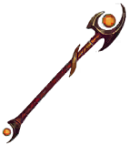 | 플레어 로드 | E | 무기 | 공용 | 마법 | 0 | 950 | 18 | 45 | 12 | 80 | 60 | 5,000,000 |
| 플레어 소드 | E | 무기 | 공용 | 물리 | 950 | 0 | 18 | 45 | 12 | 80 | 60 | 5,000,000 | |
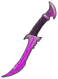 | 루나 나이프 | E | 무기 | 공용 | 물리 | 750 | 0 | 22 | 60 | 20 | 80 | 60 | 5,000,000 |
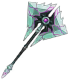 | 실프 액스 | E | 무기 | 공용 | 물리 | 1,010 | 0 | 25 | 60 | 0 | 80 | 60 | 5,000,000 |
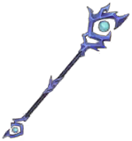 | 실프 완드 | E | 무기 | 공용 | 마법 | 0 | 1,010 | 22 | 60 | 0 | 80 | 60 | 5,000,000 |
| 루나 화살 | E | 무기 | 공용 | 물리 | 670 | 0 | 22 | 50 | 22 | 80 | 60 | 5,000,000 | |
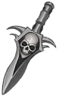 | 해골 검 | E | 무기 | 공용 | 물리 | 800 | 0 | 12 | 30 | 10 | 100 | 60 | 5,000,000 |
| 해골 고서 | E | 무기 | 공용 | 마법 | 0 | 800 | 12 | 30 | 10 | 100 | 60 | 5,000,000 | |
 | 라바 소드 | RD | 무기 | 워리어 | 물리 | 2,200 | 0 | 30 | 100 | 15 | 40 | 720 | 50,000,000 |
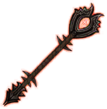 | 라바 완드 | RD | 무기 | 메이지 | 마법 | 0 | 2,200 | 30 | 100 | 15 | 40 | 720 | 50,000,000 |
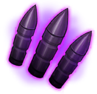 | 라바 불렛 | RD | 무기 | 헌터 | 물리 | 2,000 | 0 | 20 | 80 | 30 | 40 | 720 | 50,000,000 |
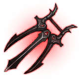 | 라바 너클 | RD | 무기 | 어쌔신 | 물리 | 2,000 | 0 | 25 | 150 | 20 | 40 | 720 | 50,000,000 |
| 라바 해머 | RD | 무기 | 팔라딘 | 물리 | 2,400 | 0 | 20 | 80 | 10 | 40 | 720 | 50,000,000 | |
 | 엑스칼리버 | RD | 무기 | 워리어 | 물리 | 4,500 | 0 | 30 | 175 | 15 | 40 | 720 | 50,000,000 |
| 계시의 금서 | RD | 무기 | 메이지 | 마법 | 0 | 4,500 | 30 | 175 | 15 | 40 | 720 | 50,000,000 | |
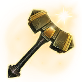 | 묠니르 | RD | 무기 | 팔라딘 | 물리 | 5,000 | 0 | 20 | 125 | 10 | 40 | 720 | 50,000,000 |
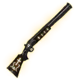 | 심판의 총신 | RD | 무기 | 헌터 | 물리 | 3,800 | 0 | 20 | 125 | 30 | 40 | 720 | 50,000,000 |
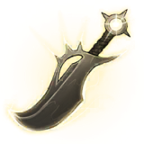 | 에테르 다거 | RD | 무기 | 어쌔신 | 물리 | 3,800 | 0 | 40 | 205 | 10 | 40 | 720 | 50,000,000 |
장비 상세
나무 검 C
특수 효과 나무와 가죽으로 만들어진 기본적인 검
제작 확률 100 · 시간 0.17 · 골드 500,000 · 강화 보호 재료 망치 ×5 · 강화표 W_C
제작 재료(m_List) Material GloryAmor_01-C_A_AncientArmor_01 ×25 · Material MAT_EA_BOW1 ×15
나무 지팡이 C
특수 효과 나무와 가죽으로 만들어진 기본적인 지팡이
제작 확률 100 · 시간 0.17 · 골드 500,000 · 강화 보호 재료 망치 ×5 · 강화표 W_C
제작 재료(m_List) Material GloryAmor_01-C_A_AncientArmor_01 ×25 · Material MAT_EA_BOW1 ×15
나무 도끼 C
특수 효과 나무와 고철으로 만들어진 기본적인 도끼
제작 확률 100 · 시간 0.17 · 골드 500,000 · 강화 보호 재료 망치 ×5 · 강화표 W_C
제작 재료(m_List) Material GloryAmor_01-C_A_AncientArmor_01 ×25 · Material MAT_EA_BOW1 ×15
나무 활 C
특수 효과 나무와 가죽으로 만들어진 기본적인 활
제작 확률 100 · 시간 0.17 · 골드 500,000 · 강화 보호 재료 망치 ×5 · 강화표 W_C
제작 재료(m_List) Material GloryAmor_01-C_A_AncientArmor_01 ×25 · Material MAT_EA_BOW1 ×15
나무 단검 C
특수 효과 나무와 고철로 만들어진 기본적인 단검
제작 확률 100 · 시간 0.17 · 골드 500,000 · 강화 보호 재료 망치 ×5 · 강화표 W_C
제작 재료(m_List) Material GloryAmor_01-C_A_AncientArmor_01 ×25 · Material MAT_EA_BOW1 ×15
해골 지팡이 R
특수 효과 해골들을 모아서 만든 수상한 지팡이
제작 확률 100 · 시간 0.5 · 골드 1,500,000 · 강화 보호 재료 망치 ×10 · 강화표 W_R
제작 재료(m_List) Material GloryAmor_01-C_A_AncientArmor_01 ×20 · Material M_TrimOrnament_Mask ×20 · Material Ground - Surface Shader Scene ×5
강철 검 R
특수 효과 철로 만들어진 단단한 검
제작 확률 100 · 시간 0.5 · 골드 1,500,000 · 강화 보호 재료 망치 ×10 · 강화표 W_R
제작 재료(m_List) (빈 칸) ×30 · Material MAT_BODY_M_01_Alternative ×20 · (빈 칸) ×5 · Material Gradient_Beam_007 ×1 · Material DungeonFloor01 ×5
강철 도끼 R
특수 효과 철로 만들어진 단단한 도끼
제작 확률 100 · 시간 0.5 · 골드 1,500,000 · 강화 보호 재료 망치 ×10 · 강화표 W_R
제작 재료(m_List) (빈 칸) ×30 · Material MAT_BODY_M_01_Alternative ×20 · AnimationClip FX_LightningBall ×5 · (빈 칸) ×5 · Material Gradient_Beam_007 ×1 · Material DungeonFloor01 ×5
강철 활 R
특수 효과 철로 만들어진 단단한 활
제작 확률 100 · 시간 0.5 · 골드 1,500,000 · 강화 보호 재료 망치 ×10 · 강화표 W_R
제작 재료(m_List) (빈 칸) ×30 · Material MAT_CYBER_SF_KATANA ×20 · (빈 칸) ×20 · AnimationClip FX_LightningBall ×5 · (빈 칸) ×5 · Material DungeonFloor01 ×5
강철 지팡이 R
특수 효과 철로 만들어진 단단한 지팡이
제작 확률 100 · 시간 0.5 · 골드 1,500,000 · 강화 보호 재료 망치 ×10 · 강화표 W_R
제작 재료(m_List) (빈 칸) ×30 · Material M_TrimOrnament_Mask ×20 · AnimationClip FX_LightningBall ×5 · (빈 칸) ×5 · Material Ground - Surface Shader Scene ×1 · Material DungeonFloor01 ×5
강철 단검 R
특수 효과 철로 만들어진 단단한 도끼
제작 확률 100 · 시간 0.5 · 골드 1,500,000 · 강화 보호 재료 망치 ×10 · 강화표 W_R
제작 재료(m_List) (빈 칸) ×30 · Material MAT_BODY_M_01_Alternative ×20 · AnimationClip FX_LightningBall ×5 · (빈 칸) ×5 · Material Gradient_Beam_007 ×1 · Material DungeonFloor01 ×5
신속의 고서 R
특수 효과 속도의 마법이 담긴 고서
제작 확률 100 · 시간 0.5 · 골드 1,500,000 · 강화 보호 재료 망치 ×10 · 강화표 W_R
제작 재료(m_List) (빈 칸) ×30 · Material M_TrimOrnament_Mask ×20 · AnimationClip FX_LightningBall ×5 · (빈 칸) ×5 · Material Ground - Surface Shader Scene ×1 · Material DungeonFloor01 ×5
플레어 로드 E
특수 효과 불의 가호를 받은 지팡이
제작 확률 80 · 시간 60 · 골드 5,000,000 · 강화 보호 재료 전설 망치 ×10 · 강화표 W_E
제작 재료(m_List) Material Ground - Surface Shader Scene ×50 · (빈 칸) ×40 · Material Cylinder001Mat ×5 · (빈 칸) ×5 · (빈 칸) ×5 · AnimatorController (이름 없음) ×3
플레어 소드 E
특수 효과 불의 가호를 받은 검
제작 확률 80 · 시간 60 · 골드 5,000,000 · 강화 보호 재료 전설 망치 ×10 · 강화표 W_E
제작 재료(m_List) Material Gradient_Beam_007 ×50 · (빈 칸) ×40 · Material Cylinder001Mat ×5 · (빈 칸) ×5 · (빈 칸) ×5 · AnimatorController (이름 없음) ×3
루나 나이프 E
특수 효과 루나 스톤으로 만들어진 짧은 나이프
제작 확률 80 · 시간 60 · 골드 5,000,000 · 강화 보호 재료 전설 망치 ×10 · 강화표 W_E
제작 재료(m_List) Material Gradient_Beam_007 ×50 · (빈 칸) ×40 · Material Cylinder001Mat ×5 · (빈 칸) ×5 · (빈 칸) ×5 · (빈 칸) ×3
실프 액스 E
특수 효과 물의 가호를 받은 도끼
제작 확률 80 · 시간 60 · 골드 5,000,000 · 강화 보호 재료 전설 망치 ×10 · 강화표 W_E
제작 재료(m_List) Material wa-11 ×50 · (빈 칸) ×40 · Material Cylinder001Mat ×5 · (빈 칸) ×5 · (빈 칸) ×5 · AnimatorController (이름 없음) ×3
실프 완드 E
특수 효과 물의 가호를 받은 지팡이
제작 확률 80 · 시간 60 · 골드 5,000,000 · 강화 보호 재료 전설 망치 ×10 · 강화표 W_E
제작 재료(m_List) Material Ground - Surface Shader Scene ×50 · (빈 칸) ×40 · Material Cylinder001Mat ×5 · (빈 칸) ×5 · (빈 칸) ×5 · AnimatorController (이름 없음) ×3
루나 화살 E
특수 효과 루나 스톤으로 만들어진 화살
제작 확률 80 · 시간 60 · 골드 5,000,000 · 강화 보호 재료 전설 망치 ×10 · 강화표 W_E
제작 재료(m_List) Material Gradient_Beam_007 ×50 · (빈 칸) ×40 · Material Cylinder001Mat ×5 · (빈 칸) ×5 · (빈 칸) ×5 · (빈 칸) ×3
해골 검 E
특수 효과 해골들을 모아서 만든 강력한 검
제작 확률 100 · 시간 60 · 골드 5,000,000 · 강화 보호 재료 전설 망치 ×10 · 강화표 W_E
제작 재료(m_List) Material M_TrimOrnament_Mask ×1,000 · Material Gradient_Beam_007 ×300 · Material DungeonFloor01 ×50 · Material Cylinder001Mat ×1 · Material Ground - Surface Shader Scene ×300
해골 고서 E
특수 효과 해골들을 모아서 만든 강력한 고서
제작 확률 100 · 시간 60 · 골드 5,000,000 · 강화 보호 재료 전설 망치 ×10 · 강화표 W_E
제작 재료(m_List) Material M_TrimOrnament_Mask ×1,000 · Material MAT_EA_BOW1 ×1,000 · Material DungeonFloor01 ×50 · Material Cylinder001Mat ×1 · Material Ground - Surface Shader Scene ×300
라바 소드 RD
특수 효과 용암의 정수를 받은 검 일반 공격시 공격력의 50% 추가피해
아이템 스킬 더블 어택 · 유형 Passive · 쿨 0
제작 확률 40 · 시간 720 · 골드 50,000,000 · 강화 보호 재료 전설 망치 ×20 · 강화표 W_RD
제작 재료(m_List) Material Gradient_Beam_007 ×50 · (빈 칸) ×40 · Material Cylinder001Mat ×10 · (빈 칸) ×30 · (빈 칸) ×20 · (빈 칸) ×10
라바 완드 RD
특수 효과 용암의 정수를 받은 완드 일반 공격시 5초간 적 마법 방어력 50% 하락 ( 중첩 불가 )
아이템 스킬 마방 디버프 · 유형 Passive · 쿨 0
제작 확률 40 · 시간 720 · 골드 50,000,000 · 강화 보호 재료 전설 망치 ×20 · 강화표 W_RD
제작 재료(m_List) Material Ground - Surface Shader Scene ×50 · (빈 칸) ×40 · Material Cylinder001Mat ×10 · (빈 칸) ×30 · (빈 칸) ×20 · (빈 칸) ×10
라바 불렛 RD
특수 효과 용암의 정수를 받은 불렛 일반 공격시 공격력의 50% 추가피해
아이템 스킬 더블 어택 · 유형 Passive · 쿨 0
제작 확률 40 · 시간 720 · 골드 50,000,000 · 강화 보호 재료 전설 망치 ×20 · 강화표 W_RD
제작 재료(m_List) Material Gradient_Beam_007 ×50 · (빈 칸) ×40 · Material Cylinder001Mat ×10 · (빈 칸) ×30 · (빈 칸) ×20 · (빈 칸) ×10
라바 너클 RD
특수 효과 용암의 정수를 받은 너클 일반 공격시 5초간 적 물리 방어력 50% 하락 ( 중첩 불가 )
아이템 스킬 물방 디버프 · 유형 Passive · 쿨 0
제작 확률 40 · 시간 720 · 골드 50,000,000 · 강화 보호 재료 전설 망치 ×20 · 강화표 W_RD
제작 재료(m_List) Material Gradient_Beam_007 ×50 · (빈 칸) ×40 · Material Cylinder001Mat ×10 · (빈 칸) ×30 · (빈 칸) ×20 · (빈 칸) ×10
라바 해머 RD
특수 효과 용암의 정수를 받은 해머 일반 공격시 최대 체력 1% 회복
아이템 스킬 체력1% · 유형 Passive · 쿨 0
제작 확률 40 · 시간 720 · 골드 50,000,000 · 강화 보호 재료 전설 망치 ×20 · 강화표 W_RD
제작 재료(m_List) Material Gradient_Beam_007 ×50 · (빈 칸) ×40 · Material Cylinder001Mat ×10 · (빈 칸) ×30 · (빈 칸) ×20 · (빈 칸) ×10
엑스칼리버 RD
특수 효과 일반 공격시 공격력의 100% 광역 피해
아이템 스킬 엑스칼리버 · 유형 Passive · 쿨 0
제작 확률 40 · 시간 720 · 골드 50,000,000 · 강화 보호 재료 전설 망치 ×20 · 강화표 W_RD
제작 재료(m_List) Material Gradient_Beam_007 ×50 · (빈 칸) ×40 · Material Cylinder001Mat ×10 · (빈 칸) ×30 · (빈 칸) ×20 · (빈 칸) ×900
계시의 금서 RD
특수 효과 스킬 사용시 최대 체력의 2% 회복
아이템 스킬 계시의 금서 · 유형 Passive · 쿨 0
제작 확률 40 · 시간 720 · 골드 50,000,000 · 강화 보호 재료 전설 망치 ×20 · 강화표 W_RD
제작 재료(m_List) Material Ground - Surface Shader Scene ×50 · (빈 칸) ×40 · Material Cylinder001Mat ×10 · (빈 칸) ×30 · (빈 칸) ×20 · (빈 칸) ×900
묠니르 RD
특수 효과 일반 공격시 최대 체력 2% 회복 후 공격력의 50% 광역피해
아이템 스킬 묠니르 · 유형 Passive · 쿨 0
제작 확률 40 · 시간 720 · 골드 50,000,000 · 강화 보호 재료 전설 망치 ×20 · 강화표 W_RD
제작 재료(m_List) Material Gradient_Beam_007 ×50 · (빈 칸) ×40 · Material Cylinder001Mat ×10 · (빈 칸) ×30 · (빈 칸) ×20 · (빈 칸) ×900
심판의 총신 RD
특수 효과 타겟과의 거리가 멀수록 공격력 증가
아이템 스킬 심판의 총신 · 유형 Passive · 쿨 0
제작 확률 40 · 시간 720 · 골드 50,000,000 · 강화 보호 재료 전설 망치 ×20 · 강화표 W_RD
제작 재료(m_List) Material Gradient_Beam_007 ×50 · (빈 칸) ×40 · Material Cylinder001Mat ×10 · (빈 칸) ×30 · (빈 칸) ×20 · (빈 칸) ×900
에테르 다거 RD
특수 효과 일반 공격시 5초간 적 물리 방어력 50% 하락 ( 중첩 불가 ) 순간이동 , 은신 이후 1초간 공격력 50% 증가
아이템 스킬 에테르 다거 · 유형 Passive · 쿨 0
제작 확률 40 · 시간 720 · 골드 50,000,000 · 강화 보호 재료 전설 망치 ×20 · 강화표 W_RD
제작 재료(m_List) Material Gradient_Beam_007 ×50 · (빈 칸) ×40 · Material Cylinder001Mat ×10 · (빈 칸) ×30 · (빈 칸) ×20 · (빈 칸) ×900
원본: W_Item_Scriptable. 빨간 칩은 아이템이 아닌 에셋을 가리키는 재료 칸입니다(장비 개요 참조).